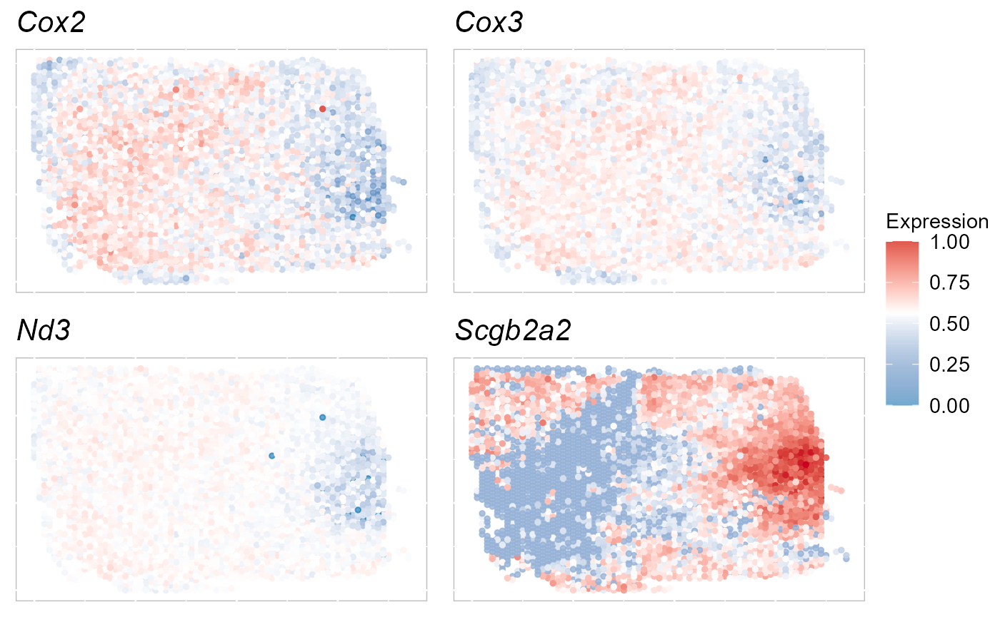
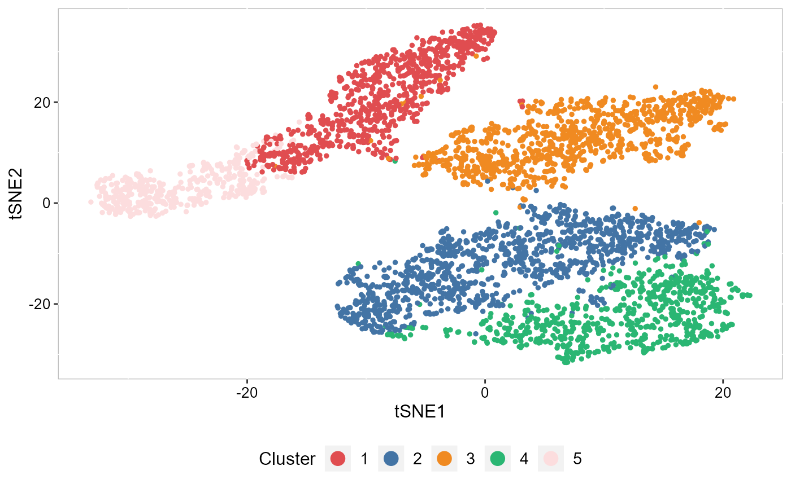
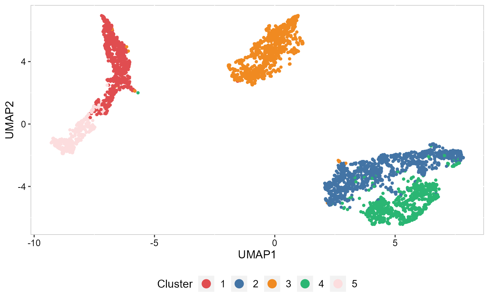
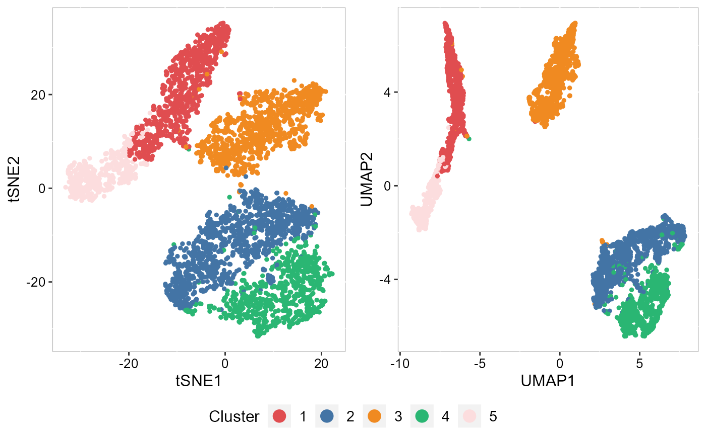
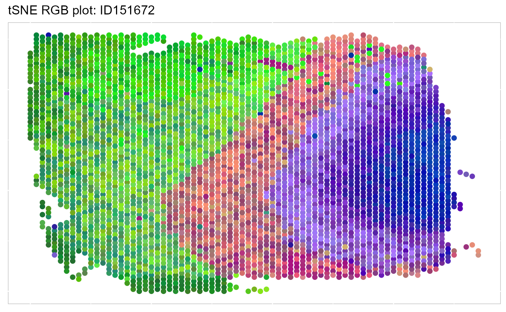
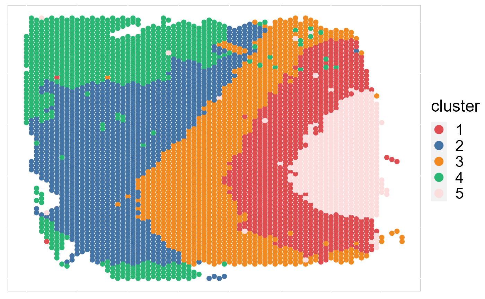
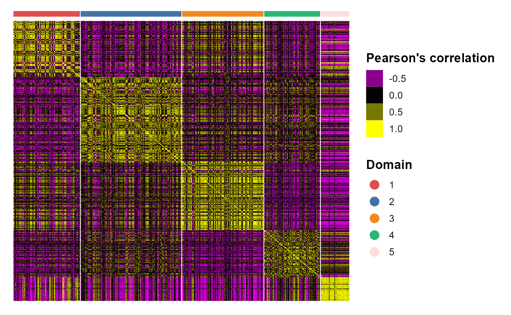
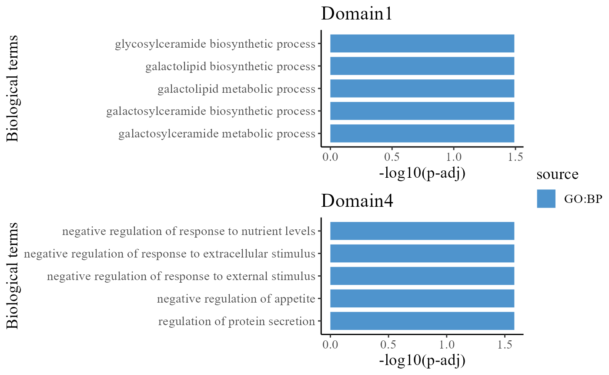
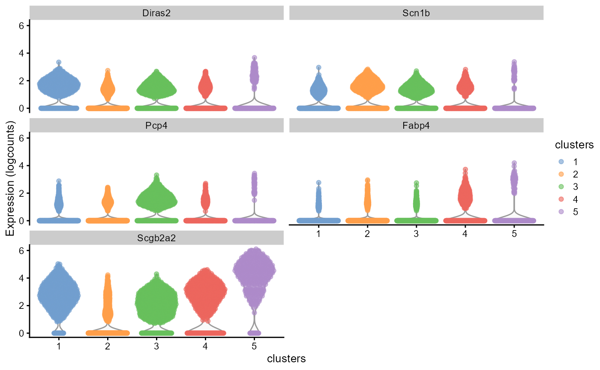
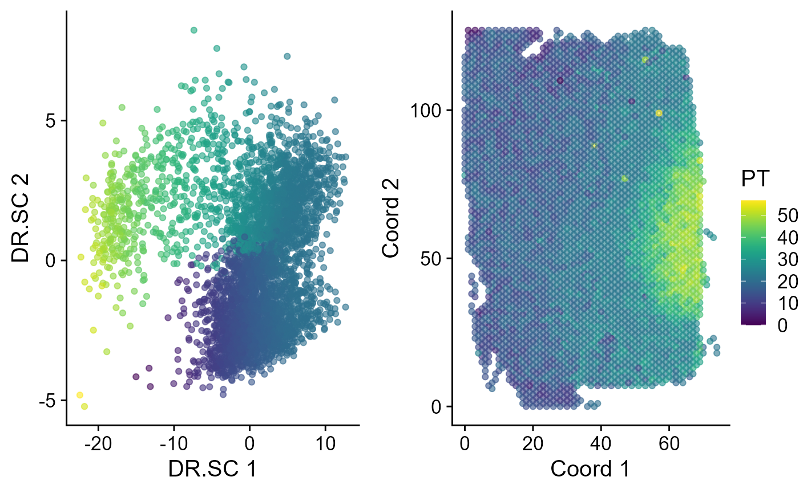

vignettes/dlpfc_tutorial.Rmd
dlpfc_tutorial.RmdThis tutorial demonstrates how to use SRTpipeline (>=0.1.0) to analyze multiple spatially-resolved transcriptomics (SRT) data. We emphases how to use DR-SC model to achieve joint embedding (dimension reduction) and spaital clustering based on the SRTProject object in the SRTpipeline package. This tutorial will cover the following tasks, which we believe will be common for many spatial analyses:
First, we load SRTpipeline.
Here, we will be analyzing a spatial transcriptomics dataset (SampleID: 151672) for human dorsolateral prefrontal cortex (DLPFC). There are 4015 spots and 33538 genes that were sequenced on the 10x Visium platform. Our preprocessed data can be downloaded here, and the raw data can be found here.
Next, we download the data to the current working path for the followed analysis by the following command:
githubURL <- "https://github.com/feiyoung/PRECAST/blob/main/vignettes_data/dlpfc_151672.rda?raw=true"
download.file(githubURL, "dlpfc_151672.rda", mode = "wb")Then load to R. The data is saved in a Seurat object named dlpfc_151672.
load("dlpfc_151672.rda")First, we show how to create a SRTProject object step by step.
Because the gene name is ensembl in this data, we change the genes’ ensembl name to symbols for convenience of followed analyses. We can see most of ensembl names have been transferred to the symbol names and the genes not transferred are generally not in the variable gene set. Thhus, it does not matter for analyses that there are genes not be transferred.
count_matrix <- dlpfc_151672[["RNA"]]@counts
## Use eg.db database: this method is fast
symbol_name <- transferGeneNames(row.names(count_matrix), now_name = "ensembl", to_name = "symbol",
species = "Human", Method = "eg.db")
row.names(count_matrix) <- symbol_name
symbol_name[1:20]## [1] "ENSG00000243485" "Fam138a" "Or4f5" "Loc100996442"
## [5] "ENSG00000239945" "ENSG00000239906" "ENSG00000241599" "ENSG00000236601"
## [9] "Or4f29" "ENSG00000235146" "Or4f16" "ENSG00000229905"
## [13] "Linc01409" "Fam87b" "Linc00115" "Fam41c"
## [17] "ENSG00000272438" "ENSG00000230699" "ENSG00000241180" "Linc02593"
## create count matrix list: note each component has a name, i.e., `ID151672`.
cntList <- list(ID151672 = count_matrix)
## create spatial coordinate matrix
coordList <- list(cbind(dlpfc_151672$row, dlpfc_151672$col))
## create metadata list
meta.data <- dlpfc_151672@meta.data
metadataList <- list(meta.data)
## create meta data for each data batches. Here we only have one data batch.
sampleMetadata <- data.frame(species = "Human", tissues = c("DLPFC"))
row.names(sampleMetadata) <- names(cntList)
## Name of this project
projectName <- "Brain151672"
rm(dlpfc_151672)Next, we start creating a SRTProject object. We can print the basic information of this object, including three parts. The first part have the class of this object, outputPath of data that require to be output, h5filePath that saves the memory-cusuming data (i.e., count, logcount, …). The second part is about the datasets basic information, such as how many data batches(sample) and the data names, sample meta data (sampleColData) and meta data for each spot (cellMetaData). The last part is about downstream analyses information (that is empty) when this object created. Quality control is also performed when creating the SRTProject. SRTpipeline allows you to easily explore QC metrics and filter cells based on any user-defined criteria. A few QC metrics commonly used by the community include * The number of unique genes detected in each cell. + Low-quality cells or empty droplets will often have very few genes + Cell doublets or multiplets may exhibit an aberrantly high gene count * Similarly, the total number of molecules detected within a cell (correlates strongly with unique genes)
In the example below, we visualize QC metrics, and use these to filter cells. * filter out the spots with nonzero expression levels for less than 20 genes. * filter out genes with non-zero expression levels for fewer than 20 spots
SRTProj <- CreateSRTProject(cntList, coordList, projectName = projectName, metadataList, sampleMetadata,
min.spots = 20, min.genes = 20)
SRTProj## class: SRTProject
## outputPath: F:\Research paper\IntegrateDRcluster\AnalysisCode\SRTpipeline\vignettes\Brain151672
## h5filePath: F:\Research paper\IntegrateDRcluster\AnalysisCode\SRTpipeline\vignettes\Brain151672/Brain151672.h5
## ---------Datasets basic information-----------------
## samples(1): ID151672
## sampleColData names(3): species tissues NumOfSpots
## cellMetaData names(101): orig.ident nCount_RNA ... r_gc.V7 batch
## numberOfSpots(1): 4015
## ---------Downstream analyses information-----------------
## Low-dimensional embeddings(0):
## Inferred cluster labels: No
## Embedding for plotting(0):After creating the SRTProject object, the next step is to normalize the data. Normalized values are stored in the h5 file of h5file path.
SRTProj <- normalizeSRT(SRTProj)We next select a subset of genes that exhibit high spot-to-spot variation in the dataset (i.e, they are highly expressed in some spots, and lowly expressed in others). It has been found that focusing on these genes in downstream analysis helps to highlight biological signal in single-cell datasets here.
In the single_basic_tutorial, we introduced using vst to choose the highly vairiable genes. Here, we introduce to apply the SPARK-X to choose the top spatially variable genes (SVGs). By default, we return 2,000 genes per dataset. These will be used in downstream analysis, like probabilistic embeddings and spatial clustering. In the SVGs selection implementation of selectVariableFeatures() function, we first select 5,000 highly variable genes to speed up the computation, then use SPARK-X to choose top SVGs from these 5000 genes. The selected SVGs are saved in SRTProj@geneMetaData$isVGs#combine for followed analysse. In addition, the other columns of SRTProj@geneMetaData save the selected SVGs for each data batch. Because there is only one data batch, SRTProj@geneMetaData$isSVGs#ID151672 is equal to SRTProj@geneMetaData$isVGs#combine. The column rankSVGs#ID151672 retains the rank of SVGs for the selected top SVGs and ranking first means that it is the most spaitally variable gene.
SRTProj <- selectVariableFeatures(SRTProj, type = "SVGs", method = "SPARK-X")
head(SRTProj@geneMetaData)## DataFrame with 6 rows and 3 columns
## isVGs#combine isSVGs#ID151672 rankSVGs#ID151672
## <logical> <logical> <integer>
## Linc01409 FALSE FALSE NA
## Fam41c FALSE FALSE NA
## Noc2l TRUE TRUE 1166
## Klhl17 FALSE FALSE NA
## Hes4 FALSE FALSE NA
## Isg15 FALSE FALSE NAUsers can access the top SVGs using
(svg4 <- topVGs(SRTProj, ntop = 4, type = "SVGs"))## [1] "Cox2" "Cox3" "Nd3" "Scgb2a2"Visualize the expression of these SVGs on the spatial coordinates.
EachExprSpaHeatMap(SRTProj, features = svg4, layout.dim = c(2, 2))
We can also choose the top highly variable genes (HVGs) using selectVariableFeatures() function. We found the performance of using SVGs or HVGs has no significant difference for the downstream analyses, such as dimension reduction and spatial clustering.
# not run here SRTProj <- selectVariableFeatures(SRTProj, type = 'HVGs', method='vst')Next, we define the neighbors for each spot by the spatial coordinates, which is represented by a sparse adjacency matrix (AdjMat) saved in the h5file. We can check the saved sparse adjacency matrix using h5ls().
## Obtain adjacence matrix
SRTProj <- AddAdj(SRTProj, platform = "Visium")
h5ls(SRTProj@projectMetadata$h5filePath)## group name otype dclass dim
## 0 / AdjMat H5I_GROUP
## 1 /AdjMat AdjMat_1 H5I_GROUP
## 2 /AdjMat/AdjMat_1 Dim H5I_DATASET INTEGER 2
## 3 /AdjMat/AdjMat_1 data H5I_DATASET FLOAT 23382
## 4 /AdjMat/AdjMat_1 indices H5I_DATASET INTEGER 23382
## 5 /AdjMat/AdjMat_1 indptr H5I_DATASET INTEGER 4016
## 6 / SpatialCoords H5I_DATASET INTEGER 4015 x 2
## 7 / cellMetaData H5I_DATASET COMPOUND 4015
## 8 / count H5I_GROUP
## 9 /count count_1 H5I_GROUP
## 10 /count/count_1 Dim H5I_DATASET INTEGER 2
## 11 /count/count_1 cellNames H5I_DATASET STRING 4015
## 12 /count/count_1 data H5I_DATASET FLOAT 7020250
## 13 /count/count_1 geneNames H5I_DATASET STRING 14640
## 14 /count/count_1 indices H5I_DATASET INTEGER 7020250
## 15 /count/count_1 indptr H5I_DATASET INTEGER 4016
## 16 / data H5I_GROUP
## 17 /data data_1 H5I_GROUP
## 18 /data/data_1 Dim H5I_DATASET INTEGER 2
## 19 /data/data_1 cellNames H5I_DATASET STRING 4015
## 20 /data/data_1 data H5I_DATASET FLOAT 7020250
## 21 /data/data_1 geneNames H5I_DATASET STRING 14640
## 22 /data/data_1 indices H5I_DATASET INTEGER 7020250
## 23 /data/data_1 indptr H5I_DATASET INTEGER 4016
## 24 / sampleMetadata H5I_DATASET COMPOUND 1
## 25 / samplenames H5I_DATASET STRING 1We fit the DR-SC model by using the top 2000 SVGs. Users can also use the top HVGs but we found the performance of using SVGs or HVGs has no significant difference for the downstream analyses, such as dimension reduction and spatial clustering. Here, we specify the number of clusters as 5, while DR.SC can also select the number of clusters given a integer vector for argument \(K\).
Afeter finishing joint dimension reduction and spatial clustering, the SRTProject SRTProj has two more downstream analyses information: the low-dimensional embeddings DR.SC and inferred cluster labels, and they are saved in SRTProj@reductions$DR.SC and SRTProj@clusters, respectively.
### Given K
SRTProj <- Cluster_DRSC(SRTProj, K = 5, q = 15)## iter = 2, loglik= 1346600.865533, dloglik=1.000627
## iter = 3, loglik= 1353742.641148, dloglik=0.005304
## iter = 4, loglik= 1355990.232665, dloglik=0.001660
## iter = 5, loglik= 1357192.177017, dloglik=0.000886
## iter = 6, loglik= 1357939.843319, dloglik=0.000551
## iter = 7, loglik= 1358452.521599, dloglik=0.000378
## iter = 8, loglik= 1358819.052312, dloglik=0.000270
## iter = 9, loglik= 1359093.534920, dloglik=0.000202
## iter = 10, loglik= 1359293.614632, dloglik=0.000147
## iter = 11, loglik= 1359451.564390, dloglik=0.000116
## iter = 12, loglik= 1359583.561794, dloglik=0.000097
## iter = 13, loglik= 1359707.432431, dloglik=0.000091
## iter = 14, loglik= 1359812.895814, dloglik=0.000078
## iter = 15, loglik= 1359905.985216, dloglik=0.000068
## iter = 16, loglik= 1359989.190665, dloglik=0.000061
## iter = 17, loglik= 1360054.345686, dloglik=0.000048
## iter = 18, loglik= 1360111.166494, dloglik=0.000042
## iter = 19, loglik= 1360162.761811, dloglik=0.000038
## iter = 20, loglik= 1360207.532071, dloglik=0.000033
## iter = 21, loglik= 1360251.634221, dloglik=0.000032
## iter = 22, loglik= 1360290.376774, dloglik=0.000028
## iter = 23, loglik= 1360324.640829, dloglik=0.000025
## iter = 24, loglik= 1360363.241937, dloglik=0.000028
## iter = 25, loglik= 1360395.307944, dloglik=0.000024
SRTProj## class: SRTProject
## outputPath: F:\Research paper\IntegrateDRcluster\AnalysisCode\SRTpipeline\vignettes\Brain151672
## h5filePath: F:\Research paper\IntegrateDRcluster\AnalysisCode\SRTpipeline\vignettes\Brain151672/Brain151672.h5
## ---------Datasets basic information-----------------
## samples(1): ID151672
## sampleColData names(3): species tissues NumOfSpots
## cellMetaData names(101): orig.ident nCount_RNA ... r_gc.V7 batch
## numberOfSpots(1): 4015
## ---------Downstream analyses information-----------------
## Variable features: 2000
## Low-dimensional embeddings(1): DR.SC
## Inferred cluster labels: Yes
## Embedding for plotting(0):SRTpipeline package offers a variety of visualization tools. To run tSNE in SRTpipeline we use the AddTSNE() function:
SRTProj <- AddTSNE(SRTProj, n_comp = 2, reduction = "DR.SC")The reduction tells AddTSNE() function uses specified reduction in the SRTProj@reductions slot to calculate tSNE embeddings.
To plot the two-dimensional tSNE results, we use the EmbedPlot() function and pass the name of the tSNE embedding we just generated (“tSNE”). We can tell SRTpipeline how to color the spots by using item argument which tells SRTpipeline which data to use to find the specified metadata column provided to name. The data are from two sources: SRTProj@clusters or SRTProj@cellMetaData. In particular, item='cluster' means using SRTProj@clusters for coloring.
We visualized the inferred domain types on embeddings using two components from tSNE. The tSNE plot showed the domain clusters were well segregated.
cols_cluster <- chooseColors(n_colors = 5)
p_tsne2 <- EmbedPlot(SRTProj, item = "cluster", plotEmbeddings = "tSNE", cols = cols_cluster, legend.position = "bottom")
p_tsne2
To run UMAP in SRTpipeline we use the AddUMAP() function. Frist, we evaluate the two-dimensional UMAPs.
SRTProj <- AddUMAP(SRTProj, n_comp = 2, reduction = "DR.SC")
p_umap2 <- EmbedPlot(SRTProj, item = "cluster", plotEmbeddings = "UMAP", cols = cols_cluster, legend.position = "bottom")
p_umap2
Next, we merge all plots into one figure.
drawFigs(list(p_tsne2, p_umap2), layout.dim = c(1, 2), common.legend = TRUE, legend.position = "bottom")
Calculate the 3-dimensional tSNEs based on the extracted features from DR-SC.
SRTProj <- AddTSNE(SRTProj, n_comp = 3, reduction = "DR.SC")We visualize the 3-dimensional tSNEs on the spatial coordinates using RGB colors. We can see there are apparent spatial pattern for the embeddings. Users can also plot the 3-dimensional UMAP RGB plot similarly.
EachRGBSpaHeatMap(SRTProj, plot_type = "tSNE", title_name = "tSNE RGB plot: ") Then, we visualize the spatial distribution of cluster labels that shows the layer structure.
EachClusterSpaHeatMap(SRTProj, cols = cols_cluster, legend.position = "right", base_size = 16)
# remove the border EachClusterSpaHeatMap(SRTProj, cols=cols_cluster,
# legend.position='right',base_size=16, border_col='white')We plotted the heatmap of Pearson’s correlation coefcients of the DR.SC embeddings among the detected domains shows the good separation of the estimated embeddings across domains (high values in the diagnal) and the correlations between deeper layers were high, e.g., there were high correlations between domain 2 and 3, while correlations among the separated layers were low, i.e., domain 1 and 4.
CCHeatMap(SRTProj, reduction = "DR.SC", grp_color = cols_cluster)
To do downstream analyses, we require to get the count data from h5file. The function getGeneSpotData() access the gene-by-spot count matrix and other data in SRTProj and then return a SpatialExperiment object, including two assays: counts, logcounts; rowData: from SRTProj@geneMetaData; colData: from SRTProj@cellMetaData, SRTProj@clusters and sample_id; reducedDim: from SRTProj@reductions, SRTProj@plotEmbeddings and sptial coordinates Coord.
spe <- getGeneSpotData(SRTProj)
spe## class: SpatialExperiment
## dim: 14640 4015
## metadata(0):
## assays(2): counts logcounts
## rownames(14640): Linc01409 Fam41c ... Loc102724770 Loc102724788
## rowData names(3): isVGs.combine isSVGs.ID151672 rankSVGs.ID151672
## colnames(4015): ID151672#AAACAAGTATCTCCCA-1 ID151672#AAACACCAATAACTGC-1
## ... ID151672#TTGTTTCCATACAACT-1 ID151672#TTGTTTGTGTAAATTC-1
## colData names(103): orig.ident nCount_RNA ... clusters sample_id
## reducedDimNames(5): DR.SC tSNE UMAP tSNE3 Coord
## mainExpName: NULL
## altExpNames(0):
## spatialData names(0) :
## spatialCoords names(2) : V1 V2
## imgData names(0):After fitting DR-SC model, we can perform differentially expression analysis using the spatial cluster labels. First, we detect the DE genes for cluster 1, where the argument use_cluster tells FindDEGs() uses which colname name in the colData(spe) to do DEG analysis.
dat_deg <- FindDEGs(spe, cluster1 = "1", use_cluster = "clusters")
subset(dat_deg, avg_log2FC > 0.25)## DataFrame with 28 rows and 5 columns
## p_val avg_log2FC pct.1 pct.2 p_val_adj
## <numeric> <numeric> <numeric> <numeric> <numeric>
## Krt17 9.02022e-82 0.417970 0.372 0.098 1.32056e-77
## B3galt2 2.26542e-73 0.410571 0.393 0.122 3.31657e-69
## Diras2 6.08970e-71 0.447130 0.753 0.438 8.91531e-67
## Themis 1.86657e-68 0.255048 0.196 0.029 2.73266e-64
## Gng2 4.53119e-62 0.396148 0.459 0.176 6.63366e-58
## ... ... ... ... ... ...
## Atp2b1 2.56436e-29 0.263823 0.726 0.538 3.75422e-25
## Ppp3cb 3.74670e-28 0.265756 0.754 0.552 5.48517e-24
## Cldnd1 1.68506e-26 0.269192 0.586 0.366 2.46692e-22
## Mobp 1.78231e-25 0.253856 0.436 0.241 2.60930e-21
## Lmo3 1.06723e-23 0.252268 0.647 0.448 1.56242e-19We perform differential expression analysis for all clusters by using FindAllDEGs() function, then the DE genes’ information is saved in a DataFrame object dat_degs.
dat_degs <- FindAllDEGs(spe, use_cluster = "clusters")
dat_degs## DataFrame with 1753 rows and 7 columns
## p_val avg_log2FC pct.1 pct.2 p_val_adj cluster
## <numeric> <numeric> <numeric> <numeric> <numeric> <factor>
## Krt17 9.02022e-82 0.417970 0.372 0.098 1.32056e-77 1
## B3galt2 2.26542e-73 0.410571 0.393 0.122 3.31657e-69 1
## Diras2 6.08970e-71 0.447130 0.753 0.438 8.91531e-67 1
## Themis 1.86657e-68 0.255048 0.196 0.029 2.73266e-64 1
## Gng2 4.53119e-62 0.396148 0.459 0.176 6.63366e-58 1
## ... ... ... ... ... ... ...
## Ppia 0.00198200 -0.271143 0.676 0.980 1 5
## Rpl15 0.00277155 -0.257737 0.515 0.921 1 5
## Agr3 0.00334172 0.255815 0.133 0.100 1 5
## Mobp.2 0.00455818 0.295763 0.273 0.279 1 5
## Sparc 0.00563869 0.309654 0.254 0.254 1 5
## gene
## <character>
## Krt17 Krt17
## B3galt2 B3galt2
## Diras2 Diras2
## Themis Themis
## Gng2 Gng2
## ... ...
## Ppia Ppia
## Rpl15 Rpl15
## Agr3 Agr3
## Mobp.2 Mobp
## Sparc SparcWe identify the significant DE genes by two criteria: (a) adjustd p-value less than 0.01 and (b) average log fold change greater than 0.4.
degs_sig <- subset(dat_degs, p_val_adj < 0.01 & avg_log2FC > 0.4)
degs_sig## DataFrame with 21 rows and 7 columns
## p_val avg_log2FC pct.1 pct.2 p_val_adj cluster
## <numeric> <numeric> <numeric> <numeric> <numeric> <factor>
## Krt17 9.02022e-82 0.417970 0.372 0.098 1.32056e-77 1
## B3galt2 2.26542e-73 0.410571 0.393 0.122 3.31657e-69 1
## Diras2 6.08970e-71 0.447130 0.753 0.438 8.91531e-67 1
## Pcp4 1.08424e-170 0.677584 0.716 0.238 1.58732e-166 3
## Fabp4 3.78837e-72 0.526506 0.400 0.132 5.54618e-68 4
## ... ... ... ... ... ... ...
## Col1a1 1.31392e-16 0.531997 0.298 0.182 1.92358e-12 5
## Col1a2 1.56491e-14 0.500862 0.261 0.153 2.29103e-10 5
## Krt18.1 3.10583e-12 0.512108 0.340 0.265 4.54694e-08 5
## Azgp1.1 1.72231e-08 0.443223 0.277 0.214 2.52146e-04 5
## Nupr1.1 5.20265e-08 0.442259 0.303 0.254 7.61669e-04 5
## gene
## <character>
## Krt17 Krt17
## B3galt2 B3galt2
## Diras2 Diras2
## Pcp4 Pcp4
## Fabp4 Fabp4
## ... ...
## Col1a1 Col1a1
## Col1a2 Col1a2
## Krt18.1 Krt18
## Azgp1.1 Azgp1
## Nupr1.1 Nupr1In the following, we perform gene set enrichment analysis for the DE genes of each Domain identified by DR-SC model using R package gprofiler2.
library(gprofiler2)
termList <- list()
for (k in 1:5) {
# k <- 1
cat("k = ", k, "\n")
dat_degs_sub <- subset(degs_sig, cluster == k)
if (nrow(dat_degs_sub) == 0)
next
que1 <- dat_degs_sub$gene
gostres <- gost(query = que1, organism = "hsapiens", correction_method = "fdr")
termList[[k]] <- gostres
}## k = 1
## k = 2
## k = 3
## k = 4
## k = 5
head(termList[[1]]$result)## query significant p_value term_size query_size intersection_size
## 1 query_1 TRUE 0.03230485 7 3 1
## 2 query_1 TRUE 0.03230485 6 3 1
## 3 query_1 TRUE 0.03230485 7 3 1
## 4 query_1 TRUE 0.03230485 6 3 1
## 5 query_1 TRUE 0.03230485 8 3 1
## 6 query_1 TRUE 0.04037340 12 3 1
## precision recall term_id source
## 1 0.3333333 0.14285714 GO:0006681 GO:BP
## 2 0.3333333 0.16666667 GO:0006682 GO:BP
## 3 0.3333333 0.14285714 GO:0019374 GO:BP
## 4 0.3333333 0.16666667 GO:0019375 GO:BP
## 5 0.3333333 0.12500000 GO:0046476 GO:BP
## 6 0.3333333 0.08333333 GO:0051798 GO:BP
## term_name effective_domain_size
## 1 galactosylceramide metabolic process 21092
## 2 galactosylceramide biosynthetic process 21092
## 3 galactolipid metabolic process 21092
## 4 galactolipid biosynthetic process 21092
## 5 glycosylceramide biosynthetic process 21092
## 6 positive regulation of hair follicle development 21092
## source_order parents
## 1 2645 GO:0006677, GO:0019374
## 2 2646 GO:0006681, GO:0019375, GO:0046476
## 3 6609 GO:0006664
## 4 6610 GO:0009247, GO:0019374
## 5 14135 GO:0006677, GO:0006688, GO:0046513
## 6 16083 GO:0001942, GO:0051094, GO:0051240, GO:0051797To understand the functions of the identified spatial domains by DR-SC model, we compare the top significant biological process (BP) pathways in GO database for the DE genes from Domain 1 and 3. Here, we only show to visualize the significant BP pathways and users can explore the other databases such as KEGG and HPA.
The enrichment analysis shows that genes specific to Domain 1 were highly enriched for galactosylceramide metabolic process, galactosylceramide biosynthetic process and galactolipid metabolic process, which may indicate the cells in Domain 1 play an important role to achieve these functions. The genes specific to Domain 4 were highly enriched for negative regulation of response to external stimulus and negative regulation of response to extracellular stimulus.
## Most commonly used databases
source_set <- c("GO:BP", "GO:CC", "GO:MF", "KEGG", "HPA")
cols <- c("steelblue3", "goldenrod", "brown3", "#f98866", "#CE6DBD")
## Here, we show GO:BP
source1 <- "GO:BP"
ss <- which(source_set == source1)
ntop = 5
names(cols) <- source_set
pList_enrich <- list()
for (ii in 1:5) {
## ii <- 4
message("ii=", ii)
dat <- termList[[ii]]$result
if (!is.null(dat)) {
dat1 <- subset(dat, term_size < 500)
dat1 <- get_top_pathway(dat1, ntop = ntop, source_set = source1)
dat1 <- dat1[complete.cases(dat1), ]
dat1$nlog10P <- -log10(dat1$p_value)
pList_enrich[[ii]] <- barPlot_enrich(dat1[order(dat1$nlog10P), ], source = "source", "term_name",
"nlog10P", cols = cols[source_set[ss]], base_size = 14) + ylab("-log10(p-adj)") + xlab("Biological terms") +
ggtitle(paste0("Domain", ii))
}
}
drawFigs(pList_enrich[c(1, 4)], common.legend = T, layout.dim = c(2, 1), align = "hv")
We take out the top DE genes for each cluster for visualization.
library(dplyr)
n <- 1
dat_degs %>%
as.data.frame %>%
group_by(cluster) %>%
top_n(n = n, wt = avg_log2FC) -> topGene
topGene## # A tibble: 5 x 7
## # Groups: cluster [5]
## p_val avg_log2FC pct.1 pct.2 p_val_adj cluster gene
## <dbl> <dbl> <dbl> <dbl> <dbl> <fct> <chr>
## 1 6.09e- 71 0.447 0.753 0.438 8.92e- 67 1 Diras2
## 2 1.06e- 54 0.340 0.658 0.45 1.56e- 50 2 Scn1b
## 3 1.08e-170 0.678 0.716 0.238 1.59e-166 3 Pcp4
## 4 3.79e- 72 0.527 0.4 0.132 5.55e- 68 4 Fabp4
## 5 1.09e-141 0.861 0.925 0.68 1.59e-137 5 Scgb2a2Then we plot the volin plot of logcount expressions grouped by clusters, which suggests the marker gene has higher expression in the corresponding cluster.
library(scater)
plotExpression(spe, features = topGene$gene, x = "clusters", exprs_values = "logcounts", colour_by = "clusters")
Next, we performed trajectory inference using the embeddings and domain labels jointly estimated by DR.SC model. The EmbedPlot() function can be used to visualize the inferred pseudotime on a specified embedding. If there is only one data batch, the function EachEmbedPlot() plays the same role as function EmbedPlot().
spe <- AddTrajectory(spe, reduction = "DR.SC", name = "PT")
p1 <- EmbedPlot(spe, reduction = "DR.SC", colour_by = "PT")
p2 <- EmbedPlot(spe, reduction = "Coord", colour_by = "PT")
drawFigs(list(p1, p2), layout.dim = c(1, 2), common.legend = TRUE, legend.position = "right")
# save(spe, SRTProj, file=paste0(SRTProj@projectMetadata$outputPath,'/SRTProj.rds'))
# load('F:/Research
# paper/IntegrateDRcluster/AnalysisCode/SRTpipeline/vignettes/DLPFC151672/SRTProj.rds')Session Info
## R version 4.1.2 (2021-11-01)
## Platform: x86_64-w64-mingw32/x64 (64-bit)
## Running under: Windows 10 x64 (build 22621)
##
## Matrix products: default
##
## locale:
## [1] LC_COLLATE=Chinese (Simplified)_China.936
## [2] LC_CTYPE=Chinese (Simplified)_China.936
## [3] LC_MONETARY=Chinese (Simplified)_China.936
## [4] LC_NUMERIC=C
## [5] LC_TIME=Chinese (Simplified)_China.936
##
## attached base packages:
## [1] stats4 stats graphics grDevices utils datasets methods
## [8] base
##
## other attached packages:
## [1] slingshot_2.2.0 TrajectoryUtils_1.2.0
## [3] princurve_2.1.6 scater_1.25.1
## [5] scuttle_1.4.0 gprofiler2_0.2.1
## [7] SpatialExperiment_1.4.0 SingleCellExperiment_1.16.0
## [9] SummarizedExperiment_1.24.0 GenomicRanges_1.46.1
## [11] GenomeInfoDb_1.30.1 MatrixGenerics_1.6.0
## [13] matrixStats_0.62.0 colorspace_2.0-3
## [15] ggplot2_3.3.6 dplyr_1.0.9
## [17] Matrix_1.4-0 sp_1.5-0
## [19] SeuratObject_4.1.0 Seurat_4.1.1
## [21] hdf5r_1.3.5 ff_4.0.7
## [23] bit_4.0.4 rhdf5_2.38.0
## [25] org.Hs.eg.db_3.14.0 AnnotationDbi_1.56.2
## [27] IRanges_2.28.0 S4Vectors_0.32.3
## [29] Biobase_2.54.0 BiocGenerics_0.40.0
## [31] SRTpipeline_0.1.1
##
## loaded via a namespace (and not attached):
## [1] scattermore_0.8 ggthemes_4.2.4
## [3] R.methodsS3_1.8.1 GiRaF_1.0.1
## [5] ragg_1.2.2 tidyr_1.2.0
## [7] bit64_4.0.5 knitr_1.37
## [9] R.utils_2.11.0 irlba_2.3.5
## [11] DelayedArray_0.20.0 data.table_1.14.2
## [13] rpart_4.1.16 KEGGREST_1.34.0
## [15] RCurl_1.98-1.6 generics_0.1.2
## [17] ScaledMatrix_1.2.0 cowplot_1.1.1
## [19] RSQLite_2.2.10 RANN_2.6.1
## [21] future_1.26.1 spatstat.data_3.0-0
## [23] httpuv_1.6.5 assertthat_0.2.1
## [25] viridis_0.6.2 xfun_0.29
## [27] jquerylib_0.1.4 evaluate_0.15
## [29] promises_1.2.0.1 fansi_1.0.3
## [31] igraph_1.3.5 DBI_1.1.2
## [33] htmlwidgets_1.5.4 spatstat.geom_2.4-0
## [35] purrr_0.3.4 ellipsis_0.3.2
## [37] RSpectra_0.16-1 ggpubr_0.4.0
## [39] backports_1.4.1 DR.SC_3.1
## [41] deldir_1.0-6 sparseMatrixStats_1.6.0
## [43] vctrs_0.4.1 ROCR_1.0-11
## [45] abind_1.4-5 cachem_1.0.6
## [47] withr_2.5.0 PRECAST_1.4
## [49] progressr_0.10.1 sctransform_0.3.3
## [51] mclust_5.4.10 goftest_1.2-3
## [53] cluster_2.1.2 lazyeval_0.2.2
## [55] crayon_1.5.1 edgeR_3.36.0
## [57] pkgconfig_2.0.3 labeling_0.4.2
## [59] nlme_3.1-155 vipor_0.4.5
## [61] rlang_1.0.2 globals_0.15.0
## [63] lifecycle_1.0.1 miniUI_0.1.1.1
## [65] rsvd_1.0.5 rprojroot_2.0.3
## [67] polyclip_1.10-0 lmtest_0.9-40
## [69] SC.MEB_1.1 carData_3.0-5
## [71] Rhdf5lib_1.16.0 zoo_1.8-10
## [73] beeswarm_0.4.0 ggridges_0.5.3
## [75] rjson_0.2.21 png_0.1-7
## [77] viridisLite_0.4.0 iSC.MEB_1.0.1
## [79] bitops_1.0-7 R.oo_1.24.0
## [81] KernSmooth_2.23-20 rhdf5filters_1.6.0
## [83] Biostrings_2.62.0 blob_1.2.2
## [85] DelayedMatrixStats_1.16.0 stringr_1.4.0
## [87] parallelly_1.32.0 spatstat.random_2.2-0
## [89] rstatix_0.7.0 ggsignif_0.6.3
## [91] beachmat_2.10.0 scales_1.2.0
## [93] memoise_2.0.1 magrittr_2.0.3
## [95] plyr_1.8.7 ica_1.0-2
## [97] zlibbioc_1.40.0 compiler_4.1.2
## [99] dqrng_0.3.0 RColorBrewer_1.1-3
## [101] fitdistrplus_1.1-8 cli_3.2.0
## [103] XVector_0.34.0 listenv_0.8.0
## [105] patchwork_1.1.1 pbapply_1.5-0
## [107] formatR_1.11 MASS_7.3-55
## [109] mgcv_1.8-39 tidyselect_1.1.2
## [111] stringi_1.7.6 textshaping_0.3.6
## [113] highr_0.9 yaml_2.3.6
## [115] locfit_1.5-9.4 BiocSingular_1.10.0
## [117] ggrepel_0.9.1 grid_4.1.2
## [119] sass_0.4.1 tools_4.1.2
## [121] future.apply_1.9.0 parallel_4.1.2
## [123] rstudioapi_0.13 gridExtra_2.3
## [125] farver_2.1.0 Rtsne_0.16
## [127] DropletUtils_1.14.2 digest_0.6.29
## [129] rgeos_0.5-9 FNN_1.1.3.1
## [131] shiny_1.7.1 Rcpp_1.0.10
## [133] car_3.0-12 broom_0.7.12
## [135] later_1.3.0 RcppAnnoy_0.0.19
## [137] httr_1.4.3 fs_1.5.2
## [139] tensor_1.5 reticulate_1.25
## [141] splines_4.1.2 uwot_0.1.11
## [143] spatstat.utils_3.0-1 pkgdown_2.0.6
## [145] plotly_4.10.0 systemfonts_1.0.4
## [147] xtable_1.8-4 jsonlite_1.8.0
## [149] R6_2.5.1 pillar_1.7.0
## [151] htmltools_0.5.2 mime_0.12
## [153] glue_1.6.2 fastmap_1.1.0
## [155] BiocParallel_1.28.3 BiocNeighbors_1.12.0
## [157] codetools_0.2-18 utf8_1.2.2
## [159] lattice_0.20-45 bslib_0.3.1
## [161] spatstat.sparse_2.1-1 tibble_3.1.7
## [163] ggbeeswarm_0.6.0 leiden_0.4.2
## [165] gtools_3.9.2.2 magick_2.7.3
## [167] limma_3.50.1 survival_3.2-13
## [169] CompQuadForm_1.4.3 rmarkdown_2.11
## [171] desc_1.4.0 munsell_0.5.0
## [173] GenomeInfoDbData_1.2.7 HDF5Array_1.22.1
## [175] reshape2_1.4.4 gtable_0.3.0
## [177] spatstat.core_2.4-4